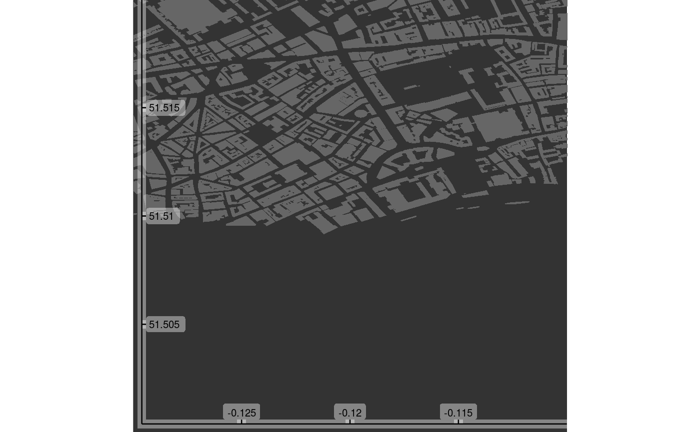

Adds axes to the internal region of an OSM plot.
add_axes(map, colour = "black", pos = c(0.02, 0.03), alpha = 0.4, fontsize = 3, fontface, fontfamily, ...)
| map | A |
|---|---|
| colour | Colour of axis (determines colour of all elements: lines, ticks, and labels). |
| pos | Positions of axes and labels relative to entire plot device. |
| alpha | alpha value for semi-transparent background surrounding axes and labels (lower values increase transparency). |
| fontsize | Size of axis font (in |
| fontface | Fontface for axis labels (1:4=plain,bold,italic,bold-italic). |
| fontfamily | Family of axis font (for example, ` |
| ... | Mechanism to allow many parameters to be passed with alternative
names ( |
Modified version of map with axes added.
bbox <- get_bbox (c (-0.13, 51.5, -0.11, 51.52)) map <- osm_basemap (bbox = bbox, bg = "gray20") map <- add_osm_objects (map, london$dat_BNR, col = "gray40") map <- add_axes (map) print (map)# Map items are added sequentially, so adding axes prior to objects will # produce a different result. map <- osm_basemap (bbox = bbox, bg = "gray20") map <- add_axes (map) map <- add_osm_objects (map, london$dat_BNR, col = "gray40") print_osm_map (map)